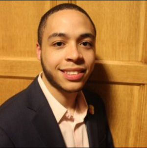

Greetings, At Alpha Chapter, every Hermano contributes to being a predominant leader within an organization at their respective campus. In accordance with our commitment for service, we host or co-host events throughout the year in order to fulfill our chapter’s needs and further exemplify our philanthropy.
 La Unidad Latina, Lambda Upsilon Lambda Fraternity Incorporated has strived in aspects of Culture, Academics, Brotherhood, and Service for 35 years. Our mission within Alpha Chapter is to unite Latinx members within the community and create leaders through educational and service-based events that we hold valuable to our Fraternity. We will continue to carry our philanthropy: Providing Access Through Higher Education (or PATHE).
Joel Morel President